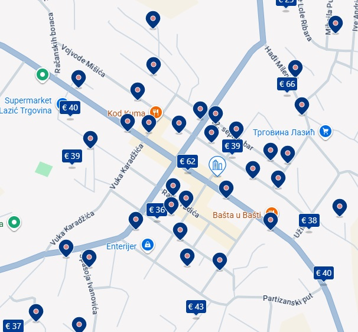

Le centre ville de Bajina Bašta est petit et on peut en faire le tour à pied. Celui-ci offre de nombreux logements sur booking et divers hôtels. Si vous êtes véhiculés (ce que nous conseillons fortement), des logements sympas sont aussi disponibles le long de la Drina.
Voici la position de la salle de récéption (Sala Gold) pour vous aider à choisir un logement proche.
Des dizaines de logements sont disponibles sur booking dans le centre ville à moins de 40€ la nuit, vous
pouvez trouver la liste complète des logements ici :
Booking.com
Pensez à mettre à jour les dates et le nombre de personnes après avoir cliqué sur le lien.

L'ensemble de ces logements est situé à moins de 10 min à pied de la salle.
Voici aussi les liens vers les deux gros hôtels de la ville, situés en plein centre et à moins de 10 min à
pied de la salle :
Zepter Hotel
(Sur la rue principale)
Hotel Turist
De nombreux logements premiums se sont construits le long de la Drina récemment, avec des piscines et des
vues magnifiques. Malheureusement la majorité d'entre eux n'est pas disponible sur des sites facilitant la
réservation (booking) et les réservations se font par messages. Depuis ces logements, il est nécessaire
d'avoir un véhicule pour se rendre à la salle (~20 min de route). Voici quelques exemples de logements que
nous avons repérés.
Maison avec piscine.
Disponible via booking.
Maison sur l'eau.
Sur le lac de Perucac il y a des dizaines de maisons flottantes, en voici une disponible sur booking.
Maison simple avec piscine.
Disponible via booking.
Grand complexe luxueux
avec piscine et terrain de basket, nous y avons déjà été invités à pour un barbecue et le lieu est
magnifique. Non dispo sur booking.
Villa luxueuse
avec piscine. Non dispo sur booking.
Complexe atypique
avec piscine. Non dispo sur booking.
Lien Instagram